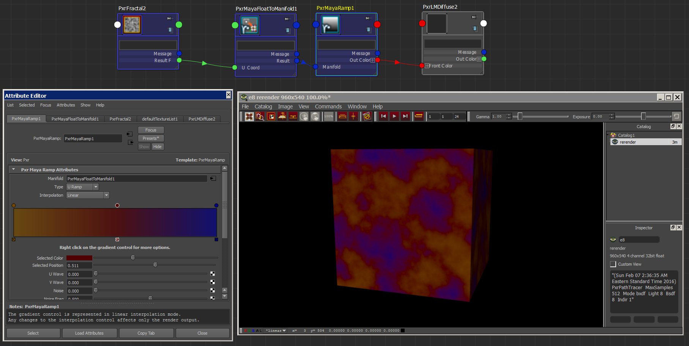

Using FloatToManifold
A cool trick is to use the node "PxrMFloatToManifold" () to drive ramp colors.

Ethan's RFM Enhancement Pack is a property of Ethan Phoenix.
All Rights Reserved © Ethan Phoenix. For personal use only. Commercial use is prohibited. Not for redistribution without permission.